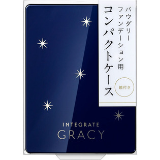

返回列表
产品名称：インテグレート グレイシィ パウダリーファンデーション用コンパクトケース

資生堂 インテグレート グレイシィ パウダリーファンデーション用コンパクトケース －
メーカー 資生堂
JANコード 4901872058907
商品の特徴
インテグレート グレイシィ パウダリーファンデーション用のケースです。別売りの入れ替え用ファンデーションの中皿を取り出し、ケースにセットしてお使いください。スポンジは入っていません。鏡付き。
成分・分量
-
用法及び用量
●中皿を入れるときは、ケースの手前に中皿をななめに差し込み、中皿のふちをカチッと音がするまで上から押してセットしてください。